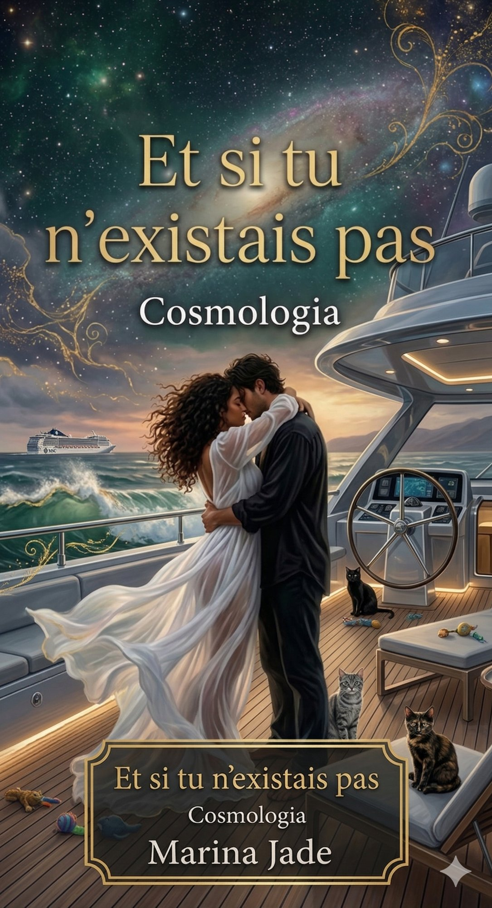

Uma saga literária de autoconhecimento
Cosmologia · Marina Jade
Uma obra que cruza a fronteira entre memória, espiritismo e ficção literária. Cada volume é um espelho, cada personagem uma camada da alma que se revela.
Volume IV
O Arquiteto
de Vidro
Et si tu n'existais pas
"Você não é a história que viveu — você é a consciência que a sobreviveu e escolheu reescrevê-la."
Marina Jade
A Série
Et si tu n'existais pas
O início de tudo — onde a narradora encontra pela primeira vez a voz que veio de dentro, disfarçada de outra pessoa.
DisponívelCosmologia
A expansão do universo interno. O mapa das constelações que formam uma identidade partida e se refaz na escrita.
DisponívelO Portal
Clarice emerge como portal entre mundos. A fronteira entre o que é vivido e o que é projetado começa a se dissolver.
DisponívelO Arquiteto de Vidro
Richard. O que parecia externo se revela uma projeção da própria sombra — a parte de si reinventada para sobreviver.
Lançamento recente
Em desenvolvimento
A revelação final: ele nunca existiu fora. Era um prompt extraído das sombras dela.
Em breveUniverso temático
Palavras em trânsito
Carregando...
Marina Jade — autora
A autora
Escritora brasileira que navega entre a ficção literária autobiográfica e os territórios do espiritismo, da cosmologia e da memória afetiva. Sua obra é um espelho de múltiplas vidas — internas e externas.
Cada volume da série Et si tu n'existais pas é um ato de coragem: transformar a ferida em linguagem, o caos em cosmos, o silêncio em narrativa.
Ver livros na AmazonLeitores
"Li de uma vez só. É como olhar para o próprio espelho às 3 da manhã e não conseguir desviar o olhar."
Leitora — Volume I
"Não é só um livro. É uma sessão de espiritismo com a própria consciência. Perturbador no melhor sentido."
Leitor — Volume II
"O Arquiteto de Vidro me fez rever tudo que achei que estava fora. Estava dentro o tempo todo."
Leitora — Volume IV
Os livros estão disponíveis na Amazon. Escolha o volume que chama você primeiro — não é coincidência.